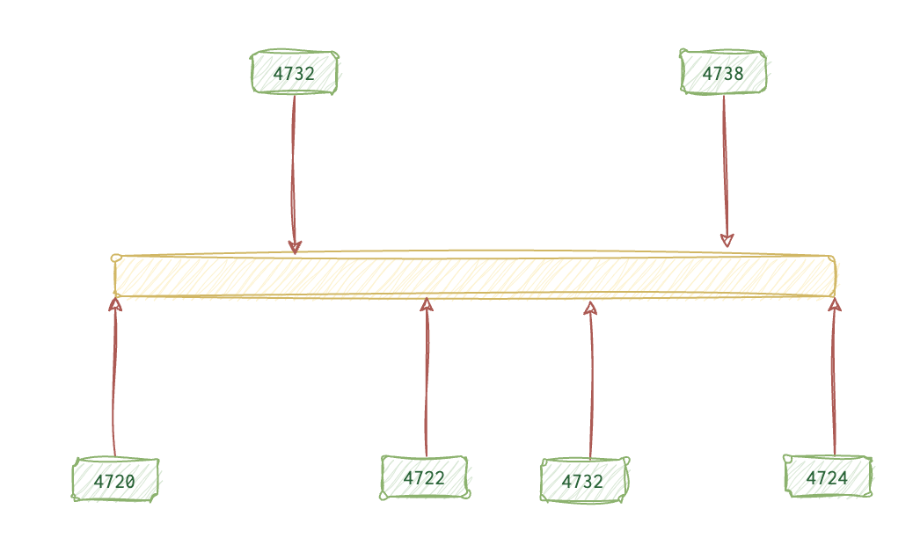

This is about … .
How do I find programs executed?
Windows
You can use Prefetch which is the most reliable source. However, if the program is NOT there, it doesn’t mean it wasn’t executed.
Another artefact of use is AmCache. What’s great about it is that it stores hashes among all. Although it’s not proof of the program being executed, it can show the PRESENCE of files (exe and drivers) on the system.
ShimCache.
It is ok to collect artefacts like that manually, but it’s better to do so at scale. Some tools were designed to process these artefacts and put everything in an SQL database.
🛠️ AppCompatProcessor.py GitHub - parses both 🏺 ShimCache and 🏺 AppCompatCache. This tool has some modules to improve the investigation process (search using regex, reconscan, filehitcount, stack etc.). One of particular interest is tcorr, which performs temporal correlation of execution (files that are usually executed closer in time). leven finds files that are slightly different in names from known executables, and rndsearch - attempts to identify randomly named files.
Event Logs.
Services
Services are managed by SCM (Service Control Manager). The same process triggers Security (4697) and System (7034, 7035, 7036, 7040 and 7045) events.
- 🛡️
Security(4697) - service was installed - ⚙️
System7034- service crashed7035- SCM has sent a start/stop request7036- the service was started/stopped7040- start type was changed for a service7045- the service was installed
❗️PsExec process creates a new service when executed and deletes it afterwards, expect
4697and7045EID. ❗️Services are usually executing within a service account, user account running a service is something worth looking into.
Where do I look for OS/PC info?
Windows
Registry, of course.
AmCache. You can see firmware, hardware and OS info there. Although the artefact has proved to be highly “volatile”, it might change from update to update.
macOS
Linux
How to see who logged in and out?
Windows
Event Logs
There is a fine line between logon and account logon events, and that line is not just one word. The main idea is that logon is the event on the system that wants to chat, whilst account logon is the event on the server/remote system that our computer wants to talk to: user authentication and logon from the Security trail. Event codes 4624.
Most events are logged on the target machine, but you can also see these events on the source machine. That happens when the user authenticates locally with the credentials from the SAM database (NTLM protocol); you will see EID 4776 (NTLM creds used for logon) for both successful and failed logons.
When the Kerberos protocol is in use, expect the following events in the logs:
4768(successful login)4771(failed login)4769(successful authentication to a resource server, aka service ticket granted)4776- pass-the-hash. To block/unblock the ability to use this for sensitive accounts,LocalAccountTokenFilterPolicy.
When the logon is failing, the following error codes are the most frequently used (NTLM 🗝️ and Kerberos 🐕🦺):
- 🗝️
C0000064(🐕🦺0x6) - the username provided is invalid (doesn’t exist). - 🗝️
C000006A(🐕🦺0x18) - the password provided is invalid. - 🗝️
C0000070(🐕🦺0xC) - unauthorised workstation. - 🗝️
C0000234(🐕🦺0x12) - account is locked. - 🗝️
C0000071(🐕🦺0x17) - the password has expired. - 🐕🦺
0x7- server was not found. - 🐕🦺
0x25- the time difference between the machines is too big.
👴🏼 XP: 672, 673, 675, 680, 529.
Sometimes, the credentials are different for different resources. When those credentials are different from the creds in memory, the credentials are provided explicitly. That is when EID 4624 (logon type 9) gets recorded. Most scripts and hacker tools REQUIRE explicit credentials, so that’s a good lead. Also, keep in mind that the following three user categories are those that require switching accounts and using credentials explicitly the most often:
- Admins
- Attackers
- Services
When UAC window pops up, it also triggers this event. RDP activity using different creds also generate event 4648 on both the originating and the target systems.
🛠️ CobalStrike tool has two modules: pth and make_token, both using explicit credentials. Hence, it triggers 4624 type 9 logon EID and 4648 (explicit creds); the latter records both the source AND the target.
How do I spot reconnaissance activity?
Windows
Event logs
Monitoring for these events will cause a lot of noise and false positives. You need to do it in a smart way:
- Filter for sensitive groups
- Whitelist those processes performing such activity legitimately:
mmc.exe,services.exe,taskhost.exe,explorer.exe,vsssvc.exe. Presume everything else to be unusual. - What accounts are NOT supposed to do recon?
- What group was queried?
Administratorsgroup (or other groups with higher privileges) is the most desirable piece of the pie.
4798 - user’s local group membership enum.
4799 - security-enabled local group membership enum.
Group Policy -> Advanced Auditing setting to set up Audit Security Group Management and User Account Management.
🛠️ PowerSploit and 🛠️ Empire both use PowerView cmdlet set to perform recon activity for the Windows environment. 🛠️ DeathStar from 🛠️ Empire is a wrapper around it.
How do I see the user’s recent activity?
Windows
Event Logs. Attempted logons and account usage.
 The activity starts with
The activity starts with 4624 (user logged in), optionally followed by 4801 (machine unlocked) and 4800 (unlocked) events until eventually it’s the session is dissolved by the 4647 (user initiated logoff) or 4634 (successful logoff) events.
🤷🏻♀️ - optional
4720 🤷🏻♀️ (account created) - 4776 (validate creds) - 4625 🤷🏻♀️ (failed login) - 4624 (normal successful login) - 4672 🤷🏻♀️ (admin login) - 4648 🤷🏻♀️ (explicit creds used, like when running 🛠️ runas 📚 docs) - 4647 (interactive logoff initiated) - 4634 🤷🏻♀️ (logoff event, not always consistent) - 4726 🤷🏻♀️ (account deleted).
📝
4624- successful logon. Successful login. Type2(console). Bear in mind that DWM (Desktop Win Manager) and UMFD (Font Driver Host) also use this Type 2 event. Filter it out (DWM|UMFD + RegEx + Exclude in Event Log Explorer filter). These are for domain accounts.
Using Logon ID you can link logon event to a logoff event and check the session duration.
How do I find out injection attempts?
Windows
Sysmon logs, 25.
Remote activity
Windows
Event Logs
RDP
- On source machine:
Security🛡️ (4648)TerminalServices-RDPClient🌸 (1024and1102)
- On the target machine:
Security🛡️ (4624, logon type10,4778and4779), seeSession nameto confirm it’s an RDP.Remote Desktop Services-RDPCoreTs🍇 (131,98)TerminalServices-RemoteConnectionManager🍎 (1149)TerminalServices-LocalSessionManager🍏(21,22,25,41)
Some breakdown of the above-mentioned codes (even if already explained elsewhere). You might filter for 4624 event id with logon type 10 to see the RDP connections. However, bear in mind that this event only records the NEW connections, not RE-connects. 4624 type 7 is triggered when lock/unlock activity happens. You will see 4778 for reconnects and 4779 for disconnects. Client name in 4778 shows the original machine name of the actor, giving some clues about the attacker.
❗️Logon IDs for 4624 and 4778 might differ even though they represent the same session. This happens because the earlier created logon ID is often used instead. Search for 4624 events preceded by 4647 to find the logon 4624 event with the same ID.
❗️ Username in 4624 might NOT be the name of the original machine if some VPN or proxy is handling the connection.
❗️ You might also see logon type 3 (4624). It’s not commonly used instead of type 10 if NLA is on and authenticating the client before establishing the RDP session.
Several event log trails can give some insight into RDP connection: 🛡️Security, Remote Desktop Services-RDPCoreTs 🍇, TerminalServices-LocalSessionManager 🍏, TerminalServices-RemoteConnectionManager 🍎 TerminalServices-RDPClient 🌸:
| 🤦🏽♂️ Actor | source ip and username (🍇 131, 98🛡️4648, 4624, 4778, 4779, 🍎 1149🍏21, 22, 25, 41)Hostname (🛡️) |
|---|---|
| 🎯 Target | Destination hostname 🌸 1024 and destination IP 🌸 1102 |
| 📝 Event Metadata | Successful Connections 🍇 98, Attempts 🍇 131 |
❗️
TerminalServices-RDPClient🌸 is a rare beast; it records the RDP activity on the SOURCE and is rarely turned on. All other logs record activity on the REMOTE system (thus, they are present on the remote system only).
✍🏻
4648- if NLA is enabled and alternate creds are used: username, alternate username, dest hostname, dest IP, process name✍🏻
1149- Blank username may indicate the use of Sticky keys.
Network Shares
It’s pretty noisy, so be smart. Also, to enable this logging, go to Object Access -> Audit File Share.
❗️No 👴🏼 XP logs.
5140 - network share was accessed.
5142 - 5144 - share created, modified, deleted.
5145 - the shared object was accessed.
If you see some 4624 followed by multiple 5140 events, it’s probably an attempt to mount the share. The attackers will be most interested in the ADMIN$ share. However, to use it, one needs to mount IPC$ share first. That’s good since it allows us to see the account name or SID, information not recorded for the ADMIN$ share mount event.
How to track account creation activity
Windows
Event logs

It starts with the event 4720 (account created) and multiple 4732 events (member added to some security-enabled group). This account must be enabled (4722) before it can be used. You might see 4738 (account was changed) or even 4724 (password reset attempt).
✍🏻
4728- member was added to a security-enabled global group.✍🏻
4732- member was added to a security-enabled local group.✍🏻
4756- member was added to a security-enabled universal group.
USB Devices
Windows
How to spot scheduled tasks?
Windows
Event logs
Two trails are of use are Microsoft-Windows-TaskScheduler/Operational 🍇 (disabled by default on the newer systems) and Security 🛡️.
| 🍇 | 🛡️ | Info |
|---|---|---|
106 |
4698 |
Task created |
140 |
4702 |
updated |
141 |
4699 |
Deleted |
200/201 |
- | executed and completed |
| - | 4700/4701 |
enabled and disabled |
✍🏻 On older Win 👴🏼 it’s
602event. Also, config files are in bin format with.jobextension and can be parsed by ajobparser.pyscript.
Also, scheduled tasks create an XML (on newer) or bin (👴🏼) config files with helpful information like the account used, timestamps and activities scheduled. Simply go to Windows\System32\Tasks or Windows\SysWoW64\Tasks (for 32-bit) folders. Bot at.exe and schtasks.exe produce this artefact. If you know that’s a malicious task, note the account used to create it, and you have a lead because it’s likely compromised. Bingo!
Brute-force activity
Windows
Event logs
There will be no shortage of 4625 events (unsuccessful login) showing up in the logs. Since this attack is most likely happening over the network, the logon type will be 3 (often SMB or RDP). Now, if you give those events a once-over, you will be able to figure out whether we’re up against a rather pesky password spray attack or an attack on a single account.
Should you spot those events trotting out C0000064 error codes (user doesn’t exist) along with C000006A (wrong password) - you can bet your bottom dollar 💵 that’s a password-spraying attack. However, should you see the same username popping up time and again, offering only C000006A error code as a company, then, darling, you are in the midst of a targeted attack. Congrats! 🎉
How to spot RUNNING malicious processes?
How to spot malicious files/images?
How to find passwords?
How to check if the logs are cleared?
❗️These techniques require admin or higher privileges. ❗️Common with ransomware
When the Security trail is deleted, 1102 is usually created afterwards. When all other trails are deleted, 104 EID is generated in the System trail.
Event logs are NOT designed to be deleted selectively, all or none. However, some tools are capable of circumventing this and can actually partially clear the logs.
- 🛠️
Mimikatz- 📕event::dropcan stop the event log process from writingSecurityevents. It can’t restart it through, so, obvious. - 🛠️
DanderSprite- (leaked byShadowBrokers) change the pointers to the next events in the headers. So, the events are not deleted but are not visible either. Deep dive forensics to help here. - 🛠️
Invoke-Phant0m- kill the threads of event logs.
One can also suspend the event log process or make changes in RAM. However, all of these actions require 👑.
References
Expand…
- ShimCache and AmCache enterprise-wide hunting - SANS Threat Hunting Summit 2017 https://www.youtube.com/watch?v=-0bYcD3_bBs